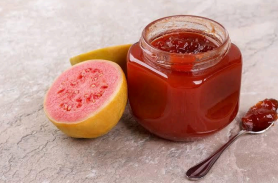

Ingredientes:
- 1 quilo de goiaba
- Meio copo de água
- 1 limão pequeno
- 250 gramas de açúcar
Modo de Preparo:
- Corte as goiabas ao meio e retire toda a semente.
- Corte de novo as goiabas em pedaços e coloque no liquidificador com a
água, o açúcar e o limão;
- Bata até ficar uma pasta;
- Em seguida, coloque a pasta em uma panela no fogo baixo e misture por 20
minutos;
- Quando estiver desgrudando da panela desligue o fogo;
- Deixe esfriar e coloque em compoteira ou pote de vidro.
Resultado Final:

Imagem ilustrativa da Geleia de Goiaba após o preparo.